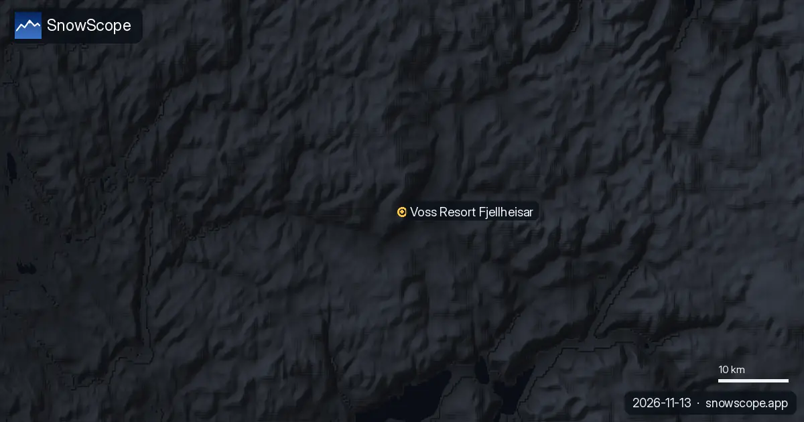

Snørapporter · Ski
Daglige snørapporter for skiløpere: hvor snøen ligger, hva som kommer og hvor du kan kjøre, fra SnowScopes snøkart og målestasjoner. Hvert tall kommer fra dagens data.

Snøprognose for Voss i midten av november 2026: rundt 20 cm på 1 348 m og nesten ingenting i sentrum ifølge Norges nasjonale snøkart; vår prognose gir rundt 35 cm på toppen, regn under 600 m.

Snødybde i Kläppen i midten av november 2026: værstasjonen i Sälen, 13 km unna, målte 45 cm 13. november etter 11 cm dagen før; skisenteret melder 25 cm. Fare for regn, åpning 11. desember, 46 vintrer.

Snøforhold i Ylläs i midten av november 2026: værstasjonene rundt Ylläs målte 0 til 2 cm 13. november, langt under normalen; rundt 23 cm snø ventet uten regn, og bakkene skal åpne 21. november.

Snøforhold i Kvitfjell i midten av november 2026: rundt 5 cm i de øvre bakkene og 3 cm i bunnen ifølge Norges nasjonale snøkart, rundt 10 cm ventet høyt oppe denne uka, og 46 vintrer.